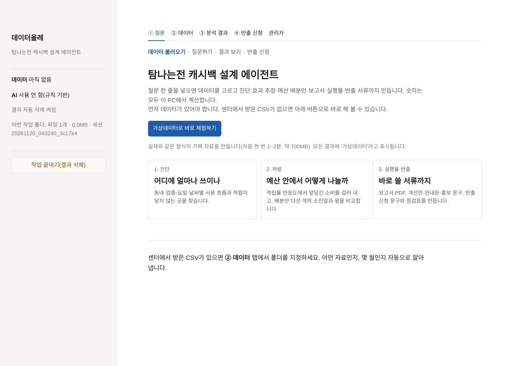

| 항목 | 내용 |
|---|---|
| 운영체제 | Windows 10 또는 11 (64비트). 센터 PC(Windows 11) 기준으로 맞췄습니다. |
| 저장 공간 | 약 2GB (프로그램 0.6GB + 시연용 가상데이터 0.5GB + 결과물) |
| 인터넷 | 설치할 때만 필요: www.python.org, pypi.org, files.pythonhosted.org AI 기능을 쓸 때: api.anthropic.com (AI를 끄면 인터넷 없이도 모든 분석이 됩니다) |
| 브라우저 | Microsoft Edge 또는 Chrome (Windows 기본 Edge로 충분, PDF 변환에도 사용) |
| 관리자 권한 | 필요 없음 (Python은 사용자 계정에 설치) |
C:\dataolle처럼 짧은 경로에 풉니다.
압축 파일을 더블클릭해서 들여다보는 화면은 '미리보기'라서 거기서는 실행되지 않습니다. 반드시 압축을 푼 폴더에서 실행하세요.설치.bat, 실행.bat, src 폴더가 보이면 성공입니다.install.bat(=설치), run.bat(=실행)을 쓰면 됩니다.https://www.python.org/downloads/windows/에 들어갑니다.설치.bat을 먼저 눌러도 괜찮습니다. "Python 3.13이 설치되어 있지 않습니다"라는 안내와 내려받을 주소가 나오니, 설치한 뒤 그 창을 닫고 설치.bat을 다시 누르면 됩니다.설치.bat을 더블클릭합니다. 검은 창이 열리고 다음 순서로 진행됩니다.
[1/4] Python 확인 [2/4] 프로그램 전용 환경(.venv)을 만드는 중... [3/4] 패키지를 설치하는 중... (약 120MB 내려받기) [4/4] 설정 폴더를 준비하는 중... [통과] Python 3.13.17 … [통과] 확장 모듈 불러오기 정상 … 결과: 정상입니다. 실행.bat을 더블클릭하세요. 설치가 끝났습니다. 이제 실행.bat 을 더블클릭하세요.
설치는 이 폴더 안(.venv, data)에만 파일을 만듭니다. 다른 프로그램이나 시스템 설정은 바꾸지 않습니다.
설치하는 패키지와 버전은 requirements-lock.txt에 고정되어 있습니다(Windows용 미리 만든 파일만 사용).
설치.bat은 마지막에 설치 점검을 자동으로 돌립니다. 나중에 다시 보려면 점검.bat(=check.bat)을 더블클릭합니다.
Python 버전, 패키지 52개의 버전, 확장 모듈 불러오기, 집계·그림·문서 한 바퀴, 폴더 쓰기 권한, 8501 포트, AI 키 유무를 확인하고 결과를 data\점검결과.txt에 저장합니다(외부로 보내는 것 없음).
점검.bat을 다시 실행해 "정상"이 나오면 됩니다.| 허용 등록 대상 | 경로·내용 |
|---|---|
| 실행 파일 | C:\dataolle\.venv\Scripts\python.exe (python.org 공식 서명 배포판의 사본) |
| 확장 모듈 폴더(하위 포함) | C:\dataolle\.venv\Lib\site-packages\ |
| 확장 모듈이 든 패키지 | numpy, pandas, duckdb, pyarrow, matplotlib, pillow(PIL), kiwisolver, contourpy, fonttools, pydantic-core, lxml, rpds-py, markupsafe, protobuf, httptools, websockets, watchdog, charset-normalizer |
| 파일 전체 목록 | data\점검결과.txt 아래쪽에 파일 경로가 한 줄씩 적혀 있습니다(약 130개). 폴더 단위 등록이 안 되면 이 목록을 그대로 전달합니다. |
압축을 다른 곳에 풀었다면 C:\dataolle 자리에 그 경로가 들어갑니다. 정확한 경로는 점검 결과 파일에 적힙니다. 관리자 권한·레지스트리 변경·서비스 등록은 필요 없습니다.
실행.bat을 더블클릭합니다. 10초쯤 뒤 브라우저에 http://127.0.0.1:8501이 열립니다. 화면이 비어 있으면 새로 고침(F5)을 누릅니다.127.0.0.1:8501을 직접 입력합니다.
캐시백 예시: "2025년 2분기 15% 적립 때 늘어난 사용액 중 학원 선결제 같은 앞당긴 소비는 얼마나 돼요?", "적립 혜택이 학원이나 고액 결제에 쏠리지 않게 나누려면?", "일도1동, 탐나는전으로 동네를 살릴 수 있을까요?"(동네 진단 카드).
다른 예시: "아이가 줄고 어르신이 늘어나는 동네는 어디예요?", "2025년 6월 이후 전통시장 탐나는전 효과가 있었나요?", "애월읍에 카페를 창업하려고 해요." 코스·동네를 직접 고르려면 '직접 설정해서 분석'을 누릅니다.
AI가 없어도 에이전트가 규칙 기반으로 같은 도구를 같은 순서로 불러 모든 분석·보고서·반출 서류를 만듭니다. AI를 켜면 에이전트가 질문에 맞게 도구를 골라 쓰고(Claude 도구 사용), 답 문장을 질문에 맞게 씁니다.
claude-haiku-5-5) API 키 입력·변경에 키를 넣은 뒤 키 저장을 누릅니다.
키는 Claude Console(platform.claude.com)의 API keys 페이지(platform.claude.com/settings/keys)에서 Create key로 만듭니다.
만들 때 워크스페이스를 지정하면 추가 설정이 필요 없습니다(지정하지 않은 키는 아래 '워크스페이스 ID' 칸에 wrkspc_…를 넣어야 합니다).
sk-ant-로 시작하는 키는 만들 때 한 번만 보이니 바로 복사하세요. 비용 관리를 위해 Console에서 사용 한도를 걸어 두기를 권장합니다.data\.env 파일에 ANTHROPIC_API_KEY=sk-ant-… 한 줄로 저장됩니다(메모장으로 직접 넣어도 됩니다).
프로그램이 시작할 때 이 파일을 읽어 환경변수로 적용하므로 Windows 환경변수를 따로 설정할 필요가 없습니다.
평가용 키가 든 제출본은 이 파일에 키가 이미 들어 있어 별도 입력 없이 AI 기능이 켜집니다(사용량 한도, 평가 후 폐기). 점검.bat의 'AI 키' 줄에서 있는지 볼 수 있습니다.
키가 없거나 한도를 넘거나 접속이 막히면 자동으로 규칙 기반으로 진행해 같은 결과물을 만듭니다.외부 AI 전송은 기본값 레벨 0입니다. AI에는 질문(수치는 가림)과 데이터·지표 이름, 절 제목, 사실 번호만 보내고, 센터 수치는 물론 센터 데이터에서 나온 동네·시장·업종 이름과 문장도 {{t3}} 같은 표식으로 가려서 보냅니다.
보낸 내용은 관리자 탭의 '전송 기록'에서 원문 그대로 확인할 수 있습니다.
Results_날짜_시간.csv)가 있는 폴더(기본: 바탕화면 요청파일)를 ② 데이터 탭에 넣고 폴더 읽기를 누릅니다.C:\dataolle 폴더를 통째로 삭제하면 됩니다(Python은 '앱 및 기능'에서 따로 제거).| 증상 | 해결 |
|---|---|
| "Python 3.13이 설치되어 있지 않습니다" | 2단계를 다시 하고, 설치 첫 화면의 "Add python.exe to PATH" 체크를 확인하세요. 설치 후 설치.bat 창을 새로 열어야 인식됩니다. |
| [3/4]에서 오류(연결 실패, SSL, 시간 초과) | 인터넷에서 pypi.org, files.pythonhosted.org 접속이 막혀 있는지 확인하세요. 기관 프록시가 있으면 검은 창에서 set HTTPS_PROXY=http://주소:포트를 입력한 뒤 설치.bat을 다시 실행합니다. 이미 받은 패키지는 다시 받지 않습니다. |
| 설치 끝에 [차단] 또는 "DLL load failed"·"ImportError" | 보안정책이 확장 모듈(.pyd·.dll)을 막은 것입니다. 3-1절대로 허용 등록을 요청하고 점검.bat으로 다시 확인합니다. |
| 실행.bat 창이 바로 닫히거나 오류 글자만 나옴 | 점검.bat을 실행해 어느 항목이 실패인지 봅니다. data\점검결과.txt를 문의 때 함께 전달하면 원인을 바로 알 수 있습니다. |
| 백신·스마트 앱 컨트롤이 실행을 막음 | 1단계의 '차단 해제' 후 다시 실행하세요. 기관 정책상 막히면 IT 담당자에게 C:\dataolle 폴더 예외를 요청합니다. |
| 브라우저에 "연결할 수 없음" | 검은 창이 열려 있는지 확인하고 10초 뒤 새로고침하세요. 다른 프로그램이 8501 포트를 쓰면 실행.bat을 메모장으로 열어 8501을 8502로 두 곳 바꿉니다. |
| 보고서 PDF 버튼 대신 "PDF 자동 변환 실패" | Edge가 없거나 정책으로 막힌 경우입니다. '보고서 미리보기'에서 Ctrl+P → 대상: PDF로 저장으로 같은 PDF를 만들 수 있습니다. |
| 차트의 한글이 네모로 보임 | Windows 기본 글꼴 '맑은 고딕'이 없는 경우입니다. 글꼴이 있는 PC에서는 자동으로 해결됩니다. |
| AI 연결 테스트 실패 | 키·인터넷(api.anthropic.com)을 확인하세요. 실패해도 'AI 사용 안 함'으로 모든 기능이 동작합니다. |
| 구분 | 내용 |
|---|---|
| 실행 환경 | Python 3.13.17 (python.org 공식 설치 파일) |
| 주요 패키지 | streamlit 1.65.0(화면), duckdb 2.0.0·pandas 3.0.5·numpy 2.5.3(집계), matplotlib 3.11.2(차트), pydantic 2.13.5(분석 계획 검증), python-docx 1.2.0(DOCX), pypdf 6.17.0(PDF 쪽수 확인) 외 의존 패키지 — 총 52개, requirements-lock.txt |
| 패키지 전체(이름 버전) | altair 6.3.0, annotated-types 0.8.0, anyio 4.15.1, attrs 26.1.0, certifi 2026.10.18, charset-normalizer 3.5.1, click 8.5.0, colorama 0.4.6, contourpy 1.4.0, cycler 0.12.1, duckdb 2.0.0, fonttools 4.67.0, h11 0.16.0, httptools 0.9.0, idna 3.20, itsdangerous 2.2.0, jinja2 3.1.6, jsonschema-specifications 2025.9.1, jsonschema 4.26.0, kiwisolver 1.5.1, lxml 6.1.3, markupsafe 3.0.3, matplotlib 3.11.2, narwhals 2.27.1, numpy 2.5.3, packaging 26.3, pandas 3.0.5, pillow 12.3.0, protobuf 7.36.1, pyarrow 25.0.1, pydantic-core 2.46.5, pydantic 2.13.5, pydeck 0.9.3, pyparsing 3.3.3, pypdf 6.17.0, python-dateutil 2.9.0.post0, python-docx 1.2.0, python-multipart 0.0.32, referencing 0.37.0, requests 2.34.2, rpds-py 2026.6.3, six 1.17.0, starlette 1.7.0, streamlit 1.65.0, toml 0.10.2, typing-extensions 4.16.0, typing-inspection 0.4.4, tzdata 2026.6, urllib3 2.8.0, uvicorn 0.54.0, watchdog 6.0.0, websockets 17.4 |
| 설치 순서 | ① Python 3.13.17 설치 → ② 설치.bat(.venv 만들기 → 패키지 설치 → 설정 폴더 → 설치 점검) → ③ 실행.bat. 수동 설치: py -3.13 -m venv .venv → .venv\Scripts\python -m pip install --only-binary=:all: -r requirements-lock.txt → .venv\Scripts\python -m streamlit run src\dataolle\app\main.py --server.address 127.0.0.1 --server.port 8501 |
| 실행 파일·주요 경로 | 설치.bat·실행.bat·점검.bat(영문 이름 install.bat·run.bat·check.bat), 본체 src\dataolle\app\main.py, 점검 도구 tools\preflight.py, AI 연결 점검 tools\ai_check.py |
| 별도 설정·권한 | 관리자 권한 불필요. 보안정책이 확장 모듈을 막는 PC에서만 3-1절의 허용 등록 필요 |
| AI 연결 | 별도 패키지 없이 Python 표준 기능(urllib)으로 호출 |
| 만드는 파일 | .venv\(패키지), data\settings.json(설정·PIN 해시), data\.env(API 키), data\sessions\(작업별 결과, 삭제 가능), data\demo_data\(가상데이터) |
| 접속 주소 | 설치 시: www.python.org, pypi.org, files.pythonhosted.org / 실행 시(AI 켬): api.anthropic.com |